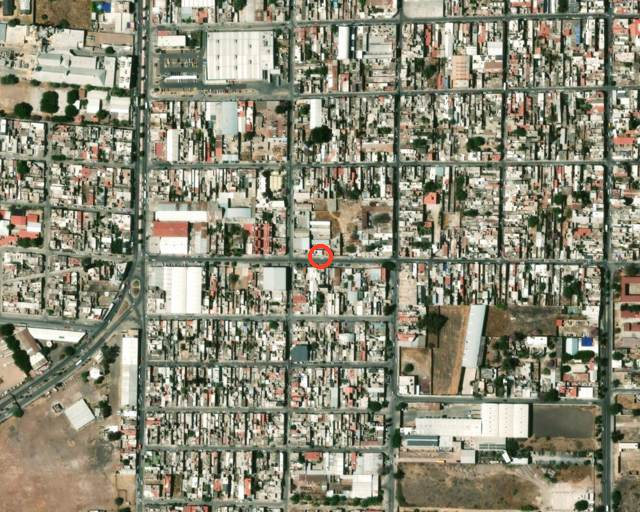

1UrbanoEl que más conviene
Lote de 600 m² en 21 de Marzo, col. Del Valle
~700 m del Jardín · calle pavimentada
Piden$2.10 M
Ofrecer$1.60–1.85 M
Mide600 m² (sin confirmar; puede ser 540)
Por m²$3,500
Frente × fondo: ~18–20 m × ~30 m (aproximado, medido en el satélite)
Lo bueno: El lote chico más céntrico: plano, baldío y en zona consolidada. Lo vende una agencia formal. Sirve para casa, local o bodega.
Ojo: Lleva casi 3 años en $2.1 M sin venderse. Tiene naves a los lados. La col. Los Álamos, a ~165 m, se encharcó en jul-2024. Confirmar medidas con escritura y topógrafo.